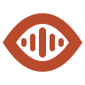

Foco + Frequência.
O olho geométrico da opção 4 encontra o pulso da opção 3. A mesma cor laranja, agora em um único símbolo.
Contorno da opção 4
Pulso da opção 3
Laranja #B94B2C
Símbolo isolado

Versão em fundo escuro
Em tamanho pequeno
16 px
24 px
32 px
Estudo rejeitado — a opção 3 original foi escolhida para o app. Em 16 px, predomina a silhueta do olho; o pulso fica mais definido a partir de 24 px.